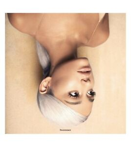
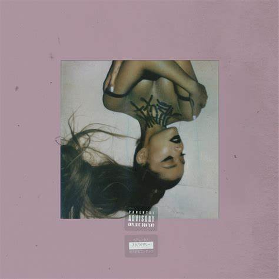
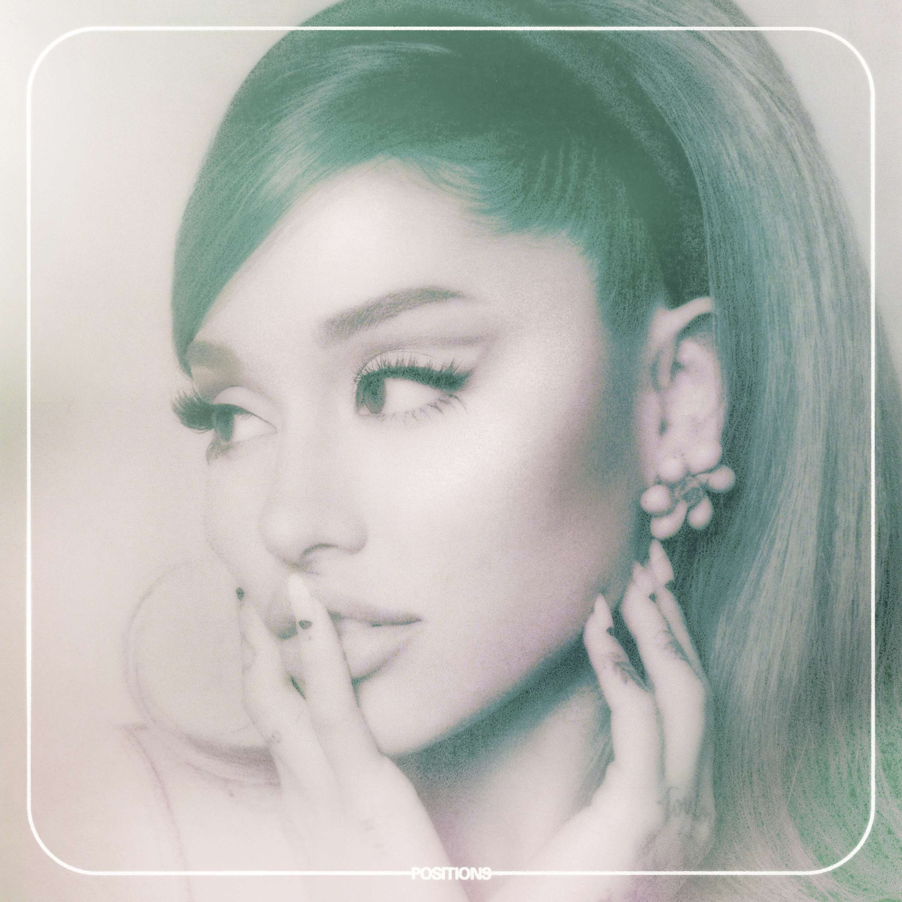

Ariana grande
Ariana Grande-Butera (Boca Raton, 26 de junho de 1993), conhecida profissionalmente como Ariana Grande, é uma cantora, compositora, instrumentista, produtora musical, dançarina, atriz, dubladora e apresentadora norte-americana. Iniciou sua carreira como atriz na TV em Victorious ao lado de Victoria Justice, em oito anos de carreira solo, ela venceu dois Grammy Awards em um total de doze indicações. Sua carreira musical começou com a trilha sonora da série Victorious. Desde então, Grande lançou seis álbuns, sendo o primeiro Yours Truly (2013), que alcançou o primeiro lugar na parada de álbuns americana, a Billboard 200. O feito também foi conquistado em mais dois lançamentos de Grande, My Everything (2014) e Sweetener (2018). Em 2016, com seu terceiro disco, Dangerous Woman, ela alcançou o segundo lugar da mesma parada. Em 2019, a cantora entregou seu quinto álbum de estúdio, no dia 8 de fevereiro, intitulado Thank U Next. E no dia 30 de outubro de 2020 lançou seu sexto álbum de estúdio, Positions.
- Yours Truly (2013)
- My Everything (2014)
- Dangerous Woman (2016)
- Sweetener (2018) 
- Thank u, next (2019) 
- Positions (2020) 